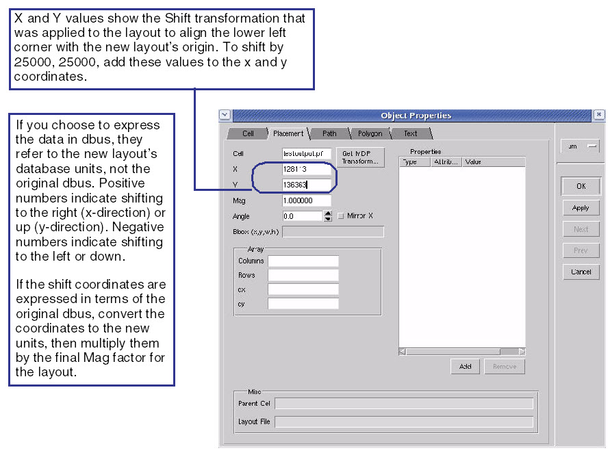

The fracture
log file only records the transformation applied by the fracture
operation. If you have transformed the mask layer data before using
it as input to the Calibre FRACTURE command, you must make further
adjustments.
Procedure
- For alignment to work properly,
make sure the top-level cell is displayed.
- With the viewer depth set
to 2 or higher so you can see the actual data, check how well the
layouts are aligned to begin with.
- If the two layouts are not
aligned exactly, set the viewer depth to 0 so only the cell outlines
are visible, then select the outline of the layout you want to adjust.
- Display the Properties dialog
box by choosing Object > Properties.
Figure 1. Modifying the Transformations
- Align the data by editing
the values in the shift (x and y) and Mag fields. Keep in mind that
if you are manually aligning data after applying transforms extracted
from the fracture log file, the final values in these fields must
reflect the dual transformation. If you have calculated the additional
shifting needed expressed in original layout database units, calculating
the dual transformation involves three steps:
- Convert user units of the
original database to the database units of the merged database.
- Multiply the shift transformation
values by any other magnification factor, as required.
- Add these values to the shift
values.
Note: FRACTURE HITACHI has the
default location for the origin (0,0) in the center of the mask.
In overlaying to other file formats, the HITACHI data is offset
by one-half the window size. To align to other file formats, you
can use the log file generated during the fracture run, or put in
an offset equivalent to half the window size.
Results
The transform data allows you to align
the mask layer to the layout database and examine the fracture results.